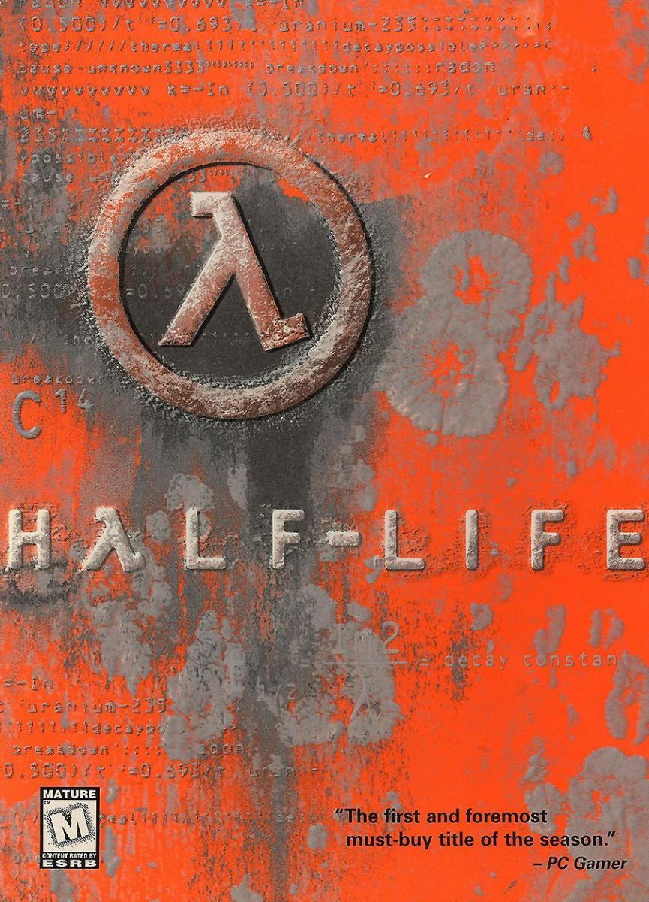

Half-Life 1 (1998)
Half-Life adalah permainan first-person shooter yang mengikuti kisah ilmuwan Gordon Freeman yang berjuang di fasilitas penelitian yang dihuni oleh alien dan pasukan militer. Game ini merevolusi cara bercerita di genre FPS.
Half-Life adalah permainan first-person shooter yang mengikuti kisah ilmuwan Gordon Freeman yang berjuang di fasilitas penelitian yang dihuni oleh alien dan pasukan militer. Game ini merevolusi cara bercerita di genre FPS.
Melanjutkan cerita Gordon Freeman, Half-Life 2 meningkatkan fisika gameplay dan immersi naratif, menampilkan Kota 17 dystopian dan rezim alien Combine.
Sebuah FPS bertahan hidup melawan zombie secara kooperatif dimana hingga empat pemain bekerja sama untuk bertahan melawan gerombolan terinfeksi. Dikenal karena kerjasama tim yang intens dan replayability yang tinggi.
Membangun dari pendahulunya dengan skenario sandera baru, infeksi khusus, senjata tambahan, dan kampanye yang diperluas, Left 4 Dead 2 adalah pengalaman horor kooperatif klasik.
Permainan puzzle platformer yang memutar otak dimana Anda menggunakan portal gun untuk memecahkan teka-teki di dalam laboratorium Aperture Science. Dikenal karena humor dan mekanisme gameplay inovatifnya.
Sequel ini meningkatkan kompleksitas teka-teki dengan gel baru, mode kooperatif dua pemain, dan cerita menarik dengan AI ikonik GLaDOS serta companion Wheatley.